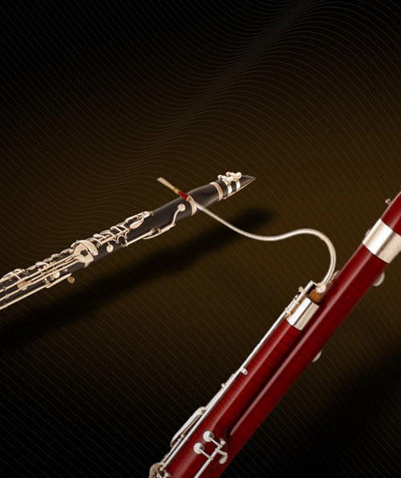
WOODWIND FAMILY
| Instruments: | Flute, piccolo, clarinet, oboe, and bassoon |
| Traits: | The family name comes from the wooden body of its intruments, although modern versions are usually made of metals or combination of wood and metals. All of its instruments produce sound from vibrations created when air is blown across the top of an instrument, across a single reed, or across two reeds. A reed is a small piece of cane clamped to a mouthpiece. |
| Position: | At the middle-front of the orchestra, right behind the strings and in front of the brass. 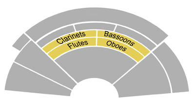 |
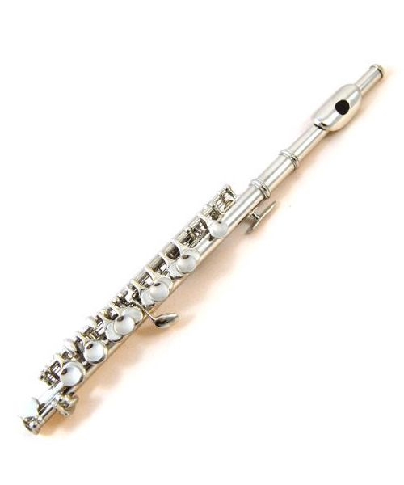
FLUTE
| Description: | The flute looks like a narrow tube with a row of holes covered by keys along one side. Traditionally made of wood, modern flutes are now made of silver or gold. Unlike other woodwind instruments, the flute has no need of a reed for its mouthpiece. |
| How to play: | Hold the flute horizontally with both hands and lay the lips over the mouthpiece. Blow air accross the hole in the mouthpiece and press down on the keys with the fingers. |
| Listen: |
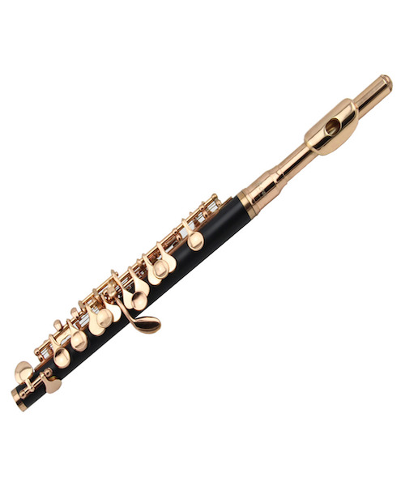
PICCOLO
| Description: | The piccolo is a narrow tube with a row of holes covered by keys along one side. It is much smaller in size than the flute, and is usually made of silver or wood. Like the flute, the piccolo has no need of a reed. It also has a higher pitch than that of a flute. |
| How to play: | Hold the piccolo horizontally with both hands and lay the lips over the mouthpiece. Blow air accross the hole in the mouthpiece and press down on the keys with the fingers. |
| Listen: |
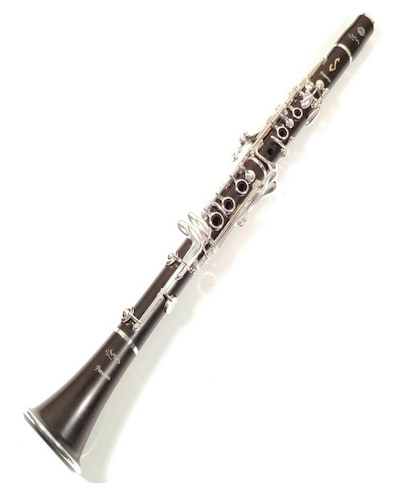
CLARINET
| Description: | The clarinet is made of wood and is a tube with a bell-shaped bottom. It uses a single reed in the mouthpiece and has metal keys along one side. |
| How to play: | Hold the clarinet vertically with both hands and hold the reed between the lips. Blow air through the reed and the mouthpiece and press down on the keys with the fingers. |
| Listen: |
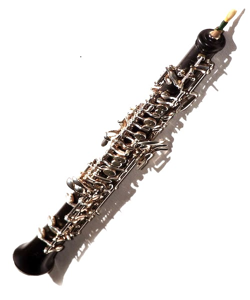
OBOE
| Description: | The oboe is a wooden tube with metal keys along one side. It uses a double reed in place of the mouthpiece. |
| How to play: | Hold the oboe vertically with both hands and hold the double reed between the lips. Blow air through the reed and press down on the keys with the fingers. |
| Listen: |

BASSOON
| Description: | The bassoon is a wooden tube with metal keys along one side. It has a double reed attached to a narrow metallic tube that goes into the body. It has the lowest sound out of all woodwind instruments. |
| How to play: | Hold the bassoon at a vertical 45 degree angle away from the body with both hands. Hold the double reed between the lips. Blow air through the reed and the narrow tube and press down on the keys with the fingers. |
| Listen: |
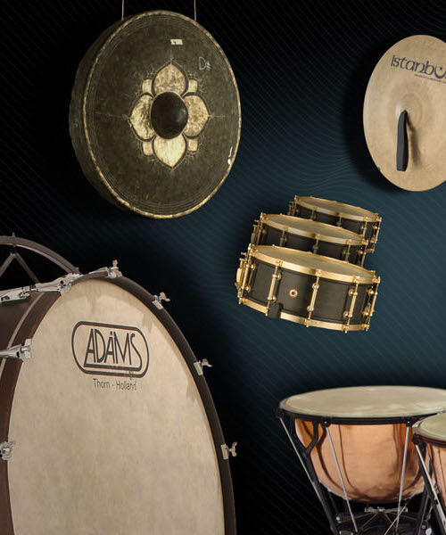
PERCUSSION FAMILY
| Instruments: | Timpani, snare drums, bass drums, cymbals, chimes, triangles, xylophones, and piano. |
| Traits: | Percussions provide a variety of rhythms. There are two types--tuned and untuned. All of its instruments produce sound by striking solid materials with the hand or a stick, or by shaking or rubbing. Unlike the other instrument families, a musician in the percussion group can play many different instruments in a single musical score. |
| Position: | At the back of the orchestra.  |
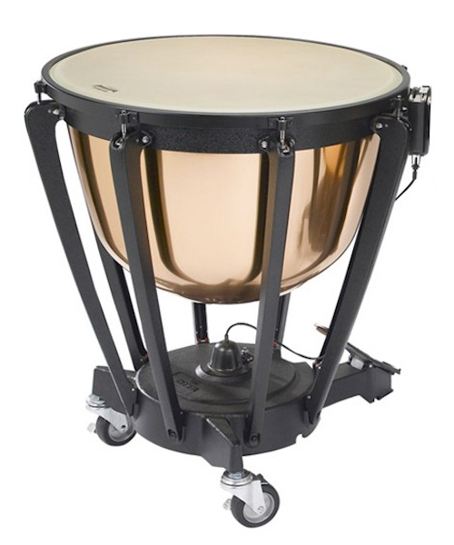
TIMPANI
| Description: | The timpani is constructed of a large copper bowl with a drumhead made of calfskin or plastic stretched across the top. Pitch varies by drum sizes. It is the first type of drums to be used in the orchestra. |
| How to play: | Strike the timpani with felt-tipped wooden sticks or mallets held in both hands. Adjust the pitch by tightening the drumhead with keys and stepping on the foot pedals. |
| Listen: |
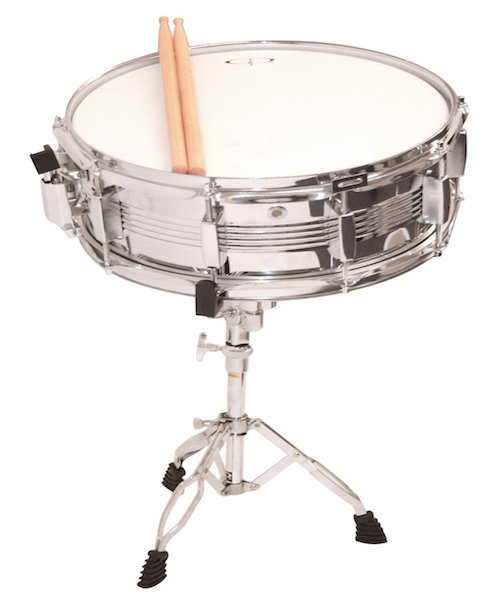
SNARE DRUM
| Description: | The snare drum has two calfskin or plastic drumheads stretched tightly over a hollow metal cylindrical frame. The bottom head has catgut or metal wires called snares stretched tightly across it. When striking the snare drum on the top head, the snares produce a sharp rattling sound as they vibrate against the bottom head. |
| How to play: | Strike the snare drum with wooden drumsticks held in both hands. |
| Listen: |
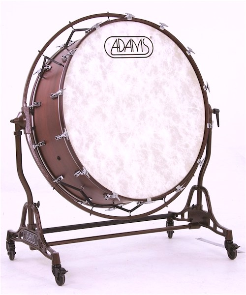
BASS DRUM
| Description: | The bass drum has two calfskin or plastic drumheads stretched tightly over a hollow metal cylindrical frame. It is the largest drum in the percussion family and is played on its side, so that both heads can be struck. |
| How to play: | Balance the bass drum between the knees. Strike the bass drum with wool-covered wooden sticks or mallets held in both hands. |
| Listen: |
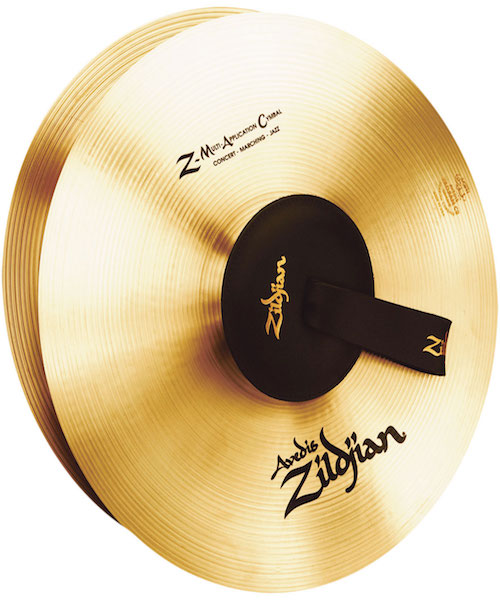
CYMBALS
| Description: | Cymbals are made from two large, slightly concave brass plates, fitted with leather hand straps. They are shaped so that when they are crashed together, only the edges touch. Different sized cymbals produce a wide range of sounds. |
| How to play: | Hold each cymbal in one hand and strike them together. Cymbals can also be played by striking with drumsticks or mallets while suspended on a string or stand. |
| Listen: |
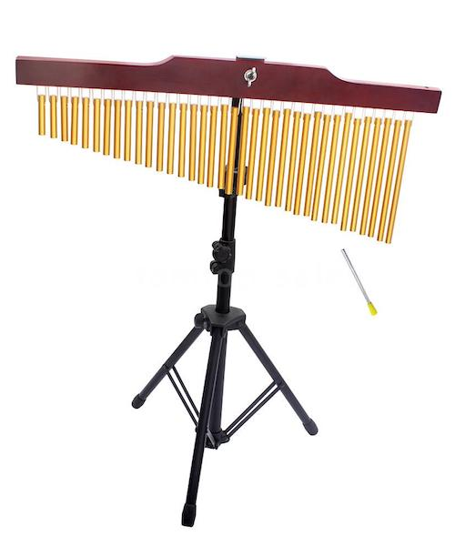
CHIMES
| Description: | Chimes consist of a set of 12 to 18 metal tubes hung from a metal frame. Each metal tube has a different length and tubes with longer length produce lower pitches. The chimes, or tubular bells, are struck with a mallet and sound like church bells when played. The |
| How to play: | Strike the chimes with wooden sticks or mallets held in both hands. |
| Listen: |

TRIANGLE
| Description: | The triangle looks like a narrow steel tube wound into the shape of a triangle. It has a leather strap. |
| How to play: | Hold the triangle in one hand by its strap and strike it with a small steel beater held in the other hand. |
| Listen: |
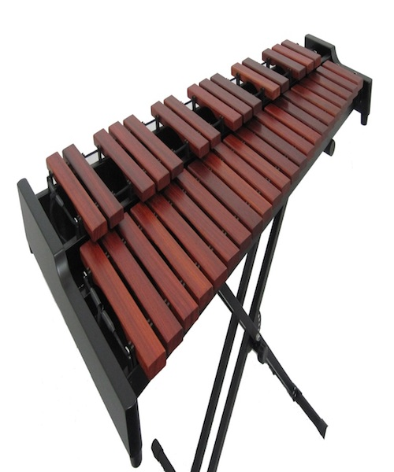
XYLOPHONE
| Description: | The xylophone is made of hardwood bars in different lengths set horizontally on a metal frame. The notes of the xylophone are laid out much like the piano. |
| How to play: | Strike the xylophone with hard mallets held in both hands. |
| Listen: |
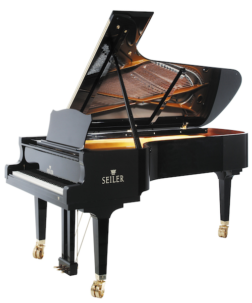
PIANO
| Description: | Unlike other percussion instruments, the sound of the piano is not produced by the vibration of a membrane or solid material. However, it is one of the keyboard instruments, which are also classified as percussion instruments because they are played by striking the keys. When a player presses the keys, this causes small hammers to strike the strings inside the instrument and produce musical sounds. |
| How to play: | Press the keys with both hands to produce sound while stepping on the pedals with the feet to sustain the notes. |
| Listen: |
QUIZ
You have finished all lessons. Take the quiz below to assess how much you recall and understand about the instruments of the orchestra.